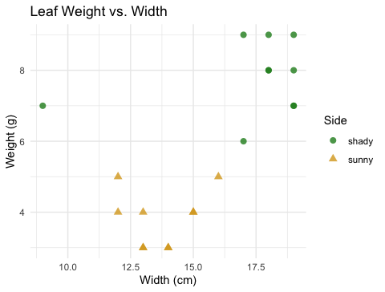
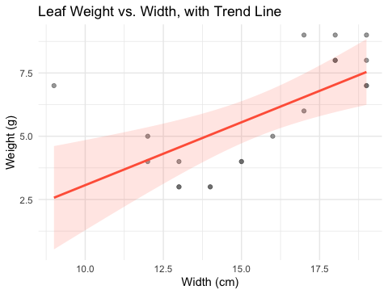
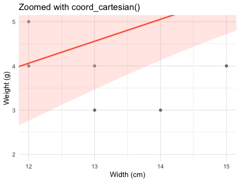
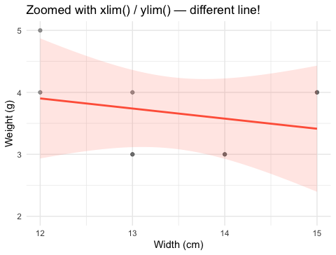
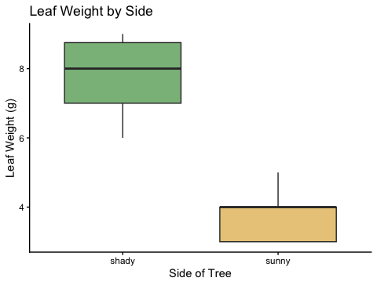

Lecture 04 — GGPlot II
More geoms, zooming safely, and picking a theme
2026-08-27
Where we left off (Lecture 03 — GGPlot I)
- Piping straight into a plot:
tree_df %>% ggplot(...) scale_color_manual()/scale_fill_manual()— colors you choosefacet_wrap()andfacet_grid()— one panel per groupstat_summary()— mean and mean ± SE, drawn from raw data
Note
✅ Key idea from Lecture 03
You can already build a grouped, colored, faceted figure. Today: one more geom, a safer way to zoom, and picking a theme that looks intentional instead of default.
Goals for Today
- Map shape alongside color, and add a trend line with
geom_smooth() - Zoom into a plot without silently dropping data —
coord_cartesian() - Pick a built-in theme and adjust it with
theme() - Save a figure in the right format for the job
Tip
🖐 Try it yourself
By the end you will recognize the single most common ggplot mistake — zooming with xlim()/ylim() — before you ever make it yourself.
References:
- 📖 Whitlock & Schluter, Ch. 2 — Displaying Data
- 📖 R4DS Ch 1 — Data Visualization
Both PDFs are in the course readings/ folder.
How to Use These Slides — Predict · Type · Run
This lecture runs in three short chunks. After each chunk you switch to the activity worksheet and type the code yourself.
Note
✅ Why bother?
xlim() and coord_cartesian() produce plots that look identical for simple scatter plots — the difference only shows up once you compute something (a smooth line, a boxplot). Typing both yourself and comparing outputs is the only way this sticks.
Load Libraries and Data
🧩 Chunk 1 of 3 · Shape, Color, and a Trend Line
We will cover: mapping shape alongside color, and geom_smooth().
🛑 After this chunk you will do Activity Part 1.
Mapping Shape Alongside Color
Note
🔮 Predict first: We map both color = side and shape = side to the same variable. Will ggplot draw one legend or two?
# Map color AND shape to the same variable -------------
tree_df %>%
ggplot(aes(x = width_cm, y = weight_g, color = side, shape = side)) +
geom_point(size = 2.5, alpha = 0.8) +
scale_color_manual(values = c("sunny" = "goldenrod", "shady" = "forestgreen")) +
labs(
title = "Leaf Weight vs. Width",
x = "Width (cm)", y = "Weight (g)",
color = "Side", shape = "Side"
) +
theme_minimal()
- Mapping the same variable to both
colorandshapemerges them into one legend - This makes the plot easier to read in black-and-white or for colorblind readers
- If
colorandshapelegend titles differ inlabs(), you get two legends instead — usually not what you want
Adding a Trend Line — geom_smooth()
# geom_smooth() fits a line straight from the data -----
tree_df %>%
ggplot(aes(x = width_cm, y = weight_g)) +
geom_point(alpha = 0.6, color = "grey40") +
geom_smooth(method = "lm", color = "tomato", fill = "tomato", alpha = 0.15) +
labs(
title = "Leaf Weight vs. Width, with Trend Line",
x = "Width (cm)", y = "Weight (g)"
) +
theme_minimal()
method = "lm"fits a straight line (linear model)- The shaded ribbon is the 95% confidence band around the line
- We’ll fit this same relationship formally with
lm()in the Regression unit later this semester
Tip
geom_smooth() is exploration, not a hypothesis test — it shows you whether a line is worth fitting formally before you commit to one.
→ ACTIVITY 4 Part 1 now
🛑 Do Activity Part 1 now
Map shape and color to side, then add a geom_smooth() trend line. Predict, type, run.
🧩 Chunk 2 of 3 · Zooming Without Losing Data
We will cover: coord_cartesian() vs. xlim()/ylim() — they look the same until they don’t.
🛑 After this chunk you will do Activity Part 2.
coord_cartesian() — Zoom Without Removing Data
# coord_cartesian() zooms the VIEW, keeps all the data -
tree_df %>%
ggplot(aes(x = width_cm, y = weight_g)) +
geom_point(alpha = 0.6, color = "grey40") +
geom_smooth(method = "lm", color = "tomato", fill = "tomato", alpha = 0.15) +
coord_cartesian(xlim = c(12, 15), ylim = c(2, 5)) +
labs(
title = "Zoomed with coord_cartesian()",
x = "Width (cm)", y = "Weight (g)"
) +
theme_minimal()
- Zooms the view — every point still contributes to the trend line
- The trend line is fit on all 20 leaves, then the plot window is cropped afterward
- Safe to use anytime you just want a closer look
xlim() / ylim() — Removes Data First
Note
🔮 Predict first: If we drop the leaves outside our zoom window before fitting the trend line, will the line look the same as before, or different?
# xlim()/ylim() DELETE rows outside the range first ----
tree_df %>%
ggplot(aes(x = width_cm, y = weight_g)) +
geom_point(alpha = 0.6, color = "grey40") +
geom_smooth(method = "lm", color = "tomato", fill = "tomato", alpha = 0.15) +
xlim(12, 15) +
ylim(2, 5) +
labs(
title = "Zoomed with xlim() / ylim() — different line!",
x = "Width (cm)", y = "Weight (g)"
) +
theme_minimal()
Warning
⚠️ Watch out!
xlim()/ylim() silently delete rows outside the range before anything is computed. The trend line above is fit only on the leaves that remain — a different line than coord_cartesian() produced, with no warning that data went missing.
Rule of thumb: use coord_cartesian() to zoom. Only use xlim()/ylim() when you actually want those rows excluded from the analysis, not just out of view.
→ ACTIVITY 4 Part 2 now
🛑 Do Activity Part 2 now
Zoom the same plot two ways and compare the trend lines. Predict, type, run.
🧩 Chunk 3 of 3 · Themes and Saving
We will cover: picking a built-in theme, theme() tweaks, and choosing a file format with ggsave().
🛑 After this chunk you will do Activity Parts 3–4.
Picking a Theme
# theme_classic() — clean, close to journal defaults ---
tree_df %>%
ggplot(aes(x = side, y = weight_g, fill = side)) +
geom_boxplot(alpha = 0.6, outlier.shape = NA) +
scale_fill_manual(values = c("sunny" = "goldenrod", "shady" = "forestgreen")) +
labs(x = "Side of Tree", y = "Leaf Weight (g)", title = "Leaf Weight by Side") +
theme_classic() +
theme(legend.position = "none")
Five built-in themes to try on the same plot:
| Theme | Look |
|---|---|
theme_grey() |
default — grey background |
theme_bw() |
white background, grey gridlines |
theme_minimal() |
no background, subtle gridlines |
theme_classic() |
white background, axis lines only |
theme_light() |
light grey lines and border |
Tip
theme_classic() is a safe default for scientific figures — clean, uncluttered, close to what most journals expect.
Adjusting a Theme with theme()
# theme() overrides individual elements afterward -----
tree_df %>%
ggplot(aes(x = side, y = weight_g, fill = side)) +
geom_boxplot(alpha = 0.6, outlier.shape = NA) +
scale_fill_manual(values = c("sunny" = "goldenrod", "shady" = "forestgreen")) +
labs(x = "Side of Tree", y = "Leaf Weight (g)", title = "Leaf Weight by Side") +
theme_classic() +
theme(
legend.position = "none",
axis.text = element_text(size = 12),
axis.title = element_text(size = 13)
)
- Pick a built-in theme first (
theme_classic()), then addtheme()afterward to tweak individual pieces legend.position = "none"— drop a redundant legendaxis.text/axis.title— control tick labels and axis titles separately
Note
✅ Key idea
You rarely need to build a theme from scratch. Start from a built-in theme and override only what looks wrong.
Saving in the Right Format
leaf_plot <- tree_df %>%
ggplot(aes(x = side, y = weight_g, fill = side)) +
geom_boxplot(alpha = 0.6, outlier.shape = NA) +
scale_fill_manual(values = c("sunny" = "goldenrod", "shady" = "forestgreen")) +
labs(x = "Side of Tree", y = "Leaf Weight (g)") +
theme_classic() +
theme(legend.position = "none")
# PNG — good for Word docs, slides, web
ggsave("figures/leaf_weight_theme.png",
plot = leaf_plot, width = 5, height = 5,
units = "in", dpi = 300)
# PDF — vector, scales to any size, good for print
ggsave("figures/leaf_weight_theme.pdf",
plot = leaf_plot, width = 5, height = 5, units = "in")| Format | Best for | Scales? |
|---|---|---|
.png |
Word docs, slides, web | ❌ fixed pixels |
.pdf |
Print, journals | ✅ infinite |
.tiff |
Journal submission | ❌ fixed pixels |
Warning
⚠️ Watch out! ggsave() takes the filename first, then plot =. Always name the plot object explicitly — do not rely on ggsave grabbing “the last plot shown.”
→ ACTIVITY 4 Parts 3–4 now
🛑 Go to Activity 4 — Parts 3–4
Close the slides. Pick a theme, tweak it, and save your plot as both PNG and PDF.
What We Learned Today
- Map
shapealongsidecolorto merge legends geom_smooth(method = "lm")— a quick trend line, not a hypothesis testcoord_cartesian()zooms safely;xlim()/ylim()silently deletes rows first- Built-in themes (
theme_classic(), etc.) +theme()for small overrides .pngfor documents/slides,.pdffor print/journals
References:
- 📖 Whitlock & Schluter, Ch. 2 — Displaying Data
- 📖 R4DS Ch 1 — Data Visualization
Up next — Lecture 05, Wrangling:
filter(),select(),mutate(),arrange()- Chaining verbs into one pipeline